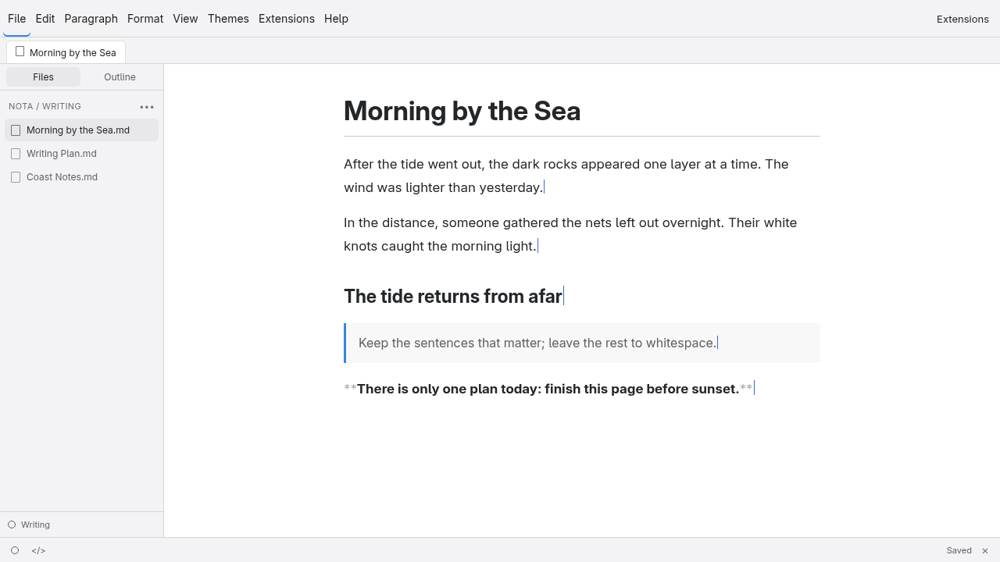

The files remain yours
Every note is ordinary Markdown. There is no proprietary database and nothing locked inside the editor.

Open a file and write. Formatting takes shape while you type, then recedes into a calm page — with no account and no proprietary database.
Settle into writing
Headings, emphasis, quotes and code take shape as you type. The document underneath remains ordinary Markdown, ready for any other tool.
Every note is ordinary Markdown. There is no proprietary database and nothing locked inside the editor.
See the rendered result while writing; move the caret to reveal the quiet source marks you need to edit.
Native windows and local file access. Starting the app, switching documents and opening large files does not wait for browser tabs.
Nota Themes
Interface themes change the workspace; document themes change the page. Both are made only from CSS and adjacent assets, loaded live from the theme repository.
Browse all themes ↗Latest release
Download the package for your system, or read the documentation and build from source.